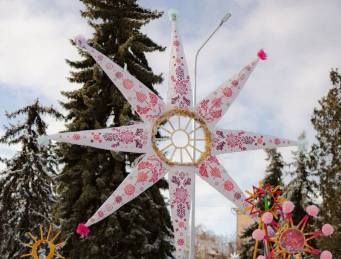

Полтавська Хода звіздарів

Жива традиція. Місто. Зірка. Спільнота.
«Полтавська Хода звіздарів» — культурна ініціатива з відродження, дослідження та сучасного переосмислення традиції різдвяного звіздарства на Полтавщині. Проєкт поєднує роботу з локальною культурною спадщиною, архівами та усною історією із сучасними мистецькими, освітніми й публічними практиками.
У центрі ініціативи — різдвяна зірка як символ колядування, пам'яті та спільноти. Через створення авторських зірок, колядування та спільну ходу вулицями міста традиція повертається в сучасний культурний простір Полтави.
Концепція та підхід
Звіздарство — частина української різдвяної традиції, пов'язана з обходами колядників, які супроводжувалися різдвяною зіркою. Етнографічні матеріали засвідчують побутування цієї практики й на Полтавщині, зокрема у Великобагачанському, Зіньківському, Гадяцькому та Полтавському районах. Традиційні полтавські зірки могли мати шість-вісім променів, оздоблювалися різними матеріалами, а всередині могли містити свічку та різдвяний образ.
Для проєкту важливо не просто відтворити історичну форму чи реконструювати обряд певного часу. Йдеться про повернення традиції в живе культурне середовище — так, щоб вона могла розвиватися, змінюватися та передаватися наступним поколінням.
Тому поруч із традиційними зірками в Ході можуть з'являтися авторські мистецькі об'єкти, експериментальні конструкції, текстильні, світлові й цифрові інтерпретації. Незмінним залишається головне — зірка як символ, який об'єднує людей у спільній різдвяній практиці.
Перша Хода — 2025
У 2025 році в Полтаві відбулася перша сучасна «Полтавська Хода звіздарів». Ініціатива об'єднала учасників навколо різдвяної традиції: звіздарі несли зірки вулицями міста, звучали колядки, а публічний простір став місцем спільного святкування та культурної взаємодії.
Одним із центральних мистецьких об'єктів стала велика різдвяна зірка розміром близько 3 × 3 метри, створена Роксоланою Дудкою та Вартаном Маркар'яном. У ній поєдналися текстиль, колаж, ручний друк, світло, RGB-підсвічування та дзвони. Традиційний образ отримав сучасне художнє втілення, спеціально створене для руху в міському просторі.
Дослідження та архівна робота
Важливою складовою проєкту стало дослідження історії різдвяних традицій Полтавщини та пошук матеріалів, що зберігають пам'ять про попередні покоління звіздарів і колядників.
Під час підготовки першої Ходи були знайдені приватні фото- та відеоматеріали полтавської «Коляди» 1995 року. Їх виявила Роксолана Дудка в архіві родини Володимира Данилейка — культуролога, дослідника українських традицій та організатора тієї події.
Ці матеріали відкрили можливість простежити зв'язок між різними етапами відродження різдвяної традиції в Полтаві: від подій 1995 року до сучасної Ходи. Архівна робота стає не лише способом документування минулого, а й ресурсом для подальшого розвитку живої культурної практики.
Хода як публічний простір і спільнотворення
Сам формат Ходи має принципове значення: зірка не залишається музейним предметом чи виставковим об'єктом — вона рухається містом разом із людьми та колядою.
Вулиці, площі й міські маршрути стають частиною різдвяної події. Містяни можуть долучатися до процесії, співати колядки, створювати власні зірки та передавати традицію дітям.
Ініціатива відкрита для різних учасників і середовищ: родин, дітей та молоді, художників, майстрів, студентів, освітніх і культурних інституцій, мистецьких колективів та локальних спільнот. Організатори не виступають власниками традиції, а створюють умови для її спільного продовження.
Подальший розвиток
У 2026 році Хода продовжує розвиватися як щорічна культурна ініціатива. Один із важливих напрямів цього етапу — відкритість авторства та децентралізація створення різдвяних зірок.
Замість єдиної затвердженої форми проєкт прагне підтримувати різноманітність інтерпретацій і залучати до створення зірок нових авторів та спільноти. Серед залучених інструментів — відкриті конкурси (Open Call), освітні програми й майстер-класи, що поєднують знайомство з традиційними конструкціями та матеріалами із сучасними мистецькими підходами. У перспективі кожна Хода може отримувати нову центральну зірку, створену іншим автором або колективом. Так поступово формуватиметься багатоголосий візуальний образ традиції, а самі об'єкти зможуть ставати частиною історії сучасної Полтави та її культурних колекцій.
Організація
Засновниками «Полтавської Ходи звіздарів» є Діана Шайдаєва, Ілона Кислова-Чернявська, Роксолана Дудка, Наталка Баранник, Віктор Кропивний, Ляна Салех, Аліна Зінченко (проєкт також розвивається за участі ГО «Креативна область Мислення», кав'ярні «Кавун» та студії «Контента»). Для ГО «КОМ» цей проєкт є способом працювати з нематеріальною культурною спадщиною через сучасне мистецтво, дослідження, публічні події та залучення громади.
Робота охоплює формування концепції, мистецьке кураторство, дослідження локальної традиції, роботу з архівами, взаємодію з митцями й культурними середовищами, організацію подій та документування.
Значення для міста
«Полтавська Хода звіздарів» повертає різдвяну традицію в повсякденне культурне життя міста та створює простір для взаємодії між поколіннями. Вона поєднує локальну історію з сучасними мистецькими практиками, даючи можливість не лише зберігати культурну пам'ять, а й доповнювати її новими досвідами.
Цінність проєкту — у його тривалості. Кожен наступний рік може додавати нових учасників, авторські зірки, дослідницькі матеріали, колядки та історії, формуючи живий архів традиції.
Ми не прагнемо зберегти традицію незмінною. Ми хочемо, щоб вона продовжувала жити, рухатися містом і переходити від покоління до покоління.
Інші проєкти ГО «Креативна область мислення»